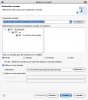

Ce tuto présente l'outil Javadoc de Sun, qui permet de générer les documentations d'un code Java.
Ca sert à quoi de commenter son code ? Je suis le seul à le lire, non ? C'est quoi la Javadoc ? Et les tags ? @param, @since, ça sert à quelque chose ? Et je fais comment pour en générer, moi, de la Javadoc ?
Si vous vous êtes déjà posé une de ces questions, alors ce tuto devrait pouvoir vous intéresser. Nous allons essayer de répondre ensemble à ces interrogations. Et vous vous rendrez compte qu'une fois que vous aurez commencé à utiliser la Javadoc, cela deviendra une étape incontournable dans la création et la maintenance de vos programmes en Java.
Il y a deux bonnes raisons pour commenter correctement son code. Tout d'abord, cela permet de mieux comprendre ce que l'on a écrit. Mais surtout, cela facilitera le travail de ceux qui voudraient comprendre, utiliser, voire maintenir votre travail. Les principaux arguments en faveur d'une bonne documentation sont ici présentés selon l'utilisation de votre code.
Pour une utilisation personnelle
Vous comprendrez mieux ce que vous avez écrit.
Vous pourrez revenir sur votre code sans avoir à vous replonger dedans.
Vous pouvez anticiper le codage d'une classe en rédigeant la doc.
Pour une utilisation scolaire
Les mêmes arguments qu'au dessus plus...
Beaucoup de profs ne lisent pas en détail les sources.
C'est toujours des points en plus de gagnés ;)
C'est plus facile quand on travaille à plusieurs.
Pour une utilisation professionnelle
Les même arguments qu'au dessus plus...
Votre code sera sans doute utilisé par d'autres.
Il sera plus facile de communiquer sur votre travail.
C'est toujours mieux vu de fournir un code avec une documentation.
J'espère que vous avez bien compris l'intérêt de documenter son code. Mais pour bien comprendre l'objectif de la Javadoc, il faut suivre le conseil suivant à la lettre.
Écrire une documentation complète, facilement utilisable, et surtout qui puisse être maintenue sans effort, c'est impossible à faire "à la main".
Le problème des commentaires internes
Si comme beaucoup de gens vous mettez des commentaires dans votre code, c'est un bon début. Mais si quelqu'un veut avoir une vue globale de votre code, il doit quand même le lire intégralement. Pire encore, si une personne lit dans votre code que vous utilisez une fonction, il est impossible pour lui d'en savoir plus sur cette fonction, sans avoir à chercher sur google par exemple... Imaginez le temps perdu ! :waw:
Le problème de la maintenance
Que ce soit dans le cas de commentaires inclus dans le code, ou (pire) dans le cas d'une documentation fournie à côté (un document OpenOffice, par exemple), comment ferez-vous pour maintenir votre code ? Il suffit que vous vouliez changer le nom d'une classe, d'une fonction, ou même déplacer une classe dans un autre package. Et c'est le drame. Vous devrez éditer chaque page de la documentation concernée par ces changements...
Vous avez bien compris l'intérêt de documenter son code. Mieux encore, vous vous êtes rendu compte que vous ne pourrez pas la faire entièrement à la main, sans quoi la maintenance pourrait ressembler à un vrai cauchemar. Vous êtes donc tout à fait prêts à lire la suite !
Javadoc, c'est avant tout un outil, développé par Sun Microsystems (la société qui a créé le langage Java). Mais par analogie, c'est aussi la documentation générée par cet outil.
Note : dans la suite de ce tuto, je parlerai de "Javadoc" pour parler de la documentation produite, et de "l'outil Javadoc" pour parler de l'outil en tant que tel.
Cet outil permet, en inspectant le code Java des classes, de produire une documentation très complète de votre code web.
Comment obtenir l'outil JavaDoc ?
L'outil Javadoc est inclus dans tous les JDK (ou SDK) de Java. Pour télécharger la dernière version du JDK, rendez-vous sur la page de téléchargement de Sun .
Si vous avez déjà un JDK installé sur votre machine, vous trouverez l'outil Javadoc dans le répertoire bin du dossier.
Javadoc génère quoi exactement ?
L'outil génère des pages HTML contenant au minimum la liste des classes, la liste des méthodes et la liste des variables. Nous verrons ensuite qu'il est possible d'ajouter tout un tas d'informations, de commentaires, afin de générer une véritable documentation, exhaustive et facilement lisible.
L'avantage du format HTML utilisé dans la documentation produite tient dans la présence de liens hypertextes. Il devient très facile de naviguer dans la documentation, au fil de la lecture.
Et puis comme ça, vous ne serez pas perdus pour mettre en forme vos commentaires ;)
Quelques exemples
Voici deux exemples de documentation générée par l'outil Javadoc. La première image correspond à une doc générée à partir d'un code sans commentaire. La seconde correspond à un code commenté correctement.
On se rend dès lors très bien compte de l'intérêt de l'outil Javadoc. La documentation produite est claire, simple, et complète. Mais on voit aussi qu'un code bien commenté génère une Javadoc plus lisible, contenant plus d'informations.
En effet, l'outil Javadoc utilise des tags mis dans le code pour compléter la documentation générée. Voyons ensemble ces différents tags.
Il est possible d'ajouter une grande quantité d'informations à un code, en utilisant les commentaires. Mais ils ne sont pas pris en compte par l'outil Javadoc. Mais Sun a bien fait les choses, il existe des commentaires spécialement faits pour la Javadoc, et mieux encore, des tags précis qui permettent de détailler des informations sur chaque classe, chaque méthode, etc.
Les commentaires Javadoc
Pour rappel, il existe trois types de commentaires en Java. Les commentaires en lignes, les commentaires sur plusieurs lignes, et les commentaires Javadoc.
Voici un exemple présentant ces trois types de commentaire.
/**
* Ceci est un commentaire Javadoc.
* Il commence par un slash suivis de deux étoiles.
* Chaque ligne doit ensuite commencer par une étoile.
* Enfin, il fini par une étoile suivie d'un slash.
*/
protected Vector<Zero> getVectorAmis(){
// Ceci est un commentaire sur une ligne
Vector<Zero> vector = new Vector<Zero>();
/* Ceci est un commentaire sur
plusieurs lignes */
for (Zero z : listeAmis){
vector.add(z);
}
return vector;
}
Donc toutes les informations que nous mettrons se trouverons dans ce commentaire Javadoc. Il doit se situer sur la ligne immédiatement avant le nom de la classe, de la méthode, ou de la variable.
Les tags Javadoc
Les tags Javadoc sont au nombre de neuf :
@param
@return
@throws
@author
@version
@see
@since
@serial
@deprecated
Je ne détaillerai pas l'utilité (contestable) du tag @serial. Pour plus d'informations, référez-vous au guide de style de SUN (voir en bas de ce tuto). De plus, des conseils de mise en page de ces tags sont expliqués dans la partie suivante de ce tuto. ;)
@param : les paramètres de la méthode
Le tag @param sert à renseigner le ou les paramètres de la méthode. Derrière le tag, il faut renseigner le nom du paramètre (son type sera inclus automatiquement dans la Javadoc).
/**
* Met à jour le niveau du membre.
*
* @param level
* Le nouveau level du membre.
*/
protected void setLevel(SDZLevel level) {
this.level = level;
}
@return : l'objet retourné par la méthode
Le tag @return sert à renseigner l'objet retourné par la méthode.
/**
* Retourne le level du zéro.
*
* @return Une instance de SDZLevel, qui correspond à niveau du membre sur SDZ.
*/
public SDZLevel getLevel() {
return level;
}
@throws : les exceptions propagées
Le tag @throws indique la présence d'une exception qui sera propagée si elle se lève. Il faut bien indiquer le type de l'exception, et la raison de l'exception.
/**
* Retourne l'adresse du profil du Zero.
*
* @return L'URL du profil du Zero, générée à partir de l'id du Zero.
*
* @throws MalformedURLException Si jamais l'url est mal formée.
*/
public URL getURLProfil() throws MalformedURLException{
URL url = new URL("http://www.siteduzero.com/membres-294-"+id+".html");
return url;
}
@author et @version : l'auteur et le numéro de version de la classe
Le tag @author renseigne le nom de l'auteur de la classe. Le tag @version indique le numéro de version de la classe. Ce dernier tag est utilisé ensuite par le tag @since (voir plus bas). Important : ces tags ne peuvent être utilisés que pour une classe ou une interface. Jamais pour une méthode.
package fr.dworkin.sdz.javadoc;
/**
* Zero est la classe représentant un membre du Site du Zéro.
*
* @author dworkin
* @version 3.0
*/
public class Zero {
[...]
}
@see : réfère à une autre méthode, classe, etc.
Le tag @see permet de faire une référence à une autre méthode, classe, etc. Concrètement, cela se symbolisera par un lien hypertexte dans la Javadoc. C'est donc un des tags les plus importants.
/**
* Le "level" du Zéro. Ce "level" peut être modifié.
*
* @see SDZLevel
*/
private SDZLevel level;
@since : depuis quelle version
Le tag @since permet de dater la présence d'une méthode, d'un paramètre. Derrière ce tag, il faut noter un numéro de version de la classe.
/**
* Met à jour le pseudo du membre.
*
* @since 3.0
*/
public void setPseudo(String pseudo) {
this.pseudo = pseudo;
}
@deprecated : indique qu'une méthode est dépréciée
Le tag @deprecated doit décrire la version depuis laquelle cette méthode / classe est dépréciée. Mais aussi ce qu'il faut utiliser à la place.
/**
* Retourne la liste des amis du zéro.
*
* @deprecated Depuis Java 1.4, remplacé par getListeAmis()
*/
protected Vector<Zero> getVectorAmis(){
Vector<Zero> vector = new Vector<Zero>();
for (Zero z : listeAmis){
vector.add(z);
}
return vector;
}
Maintenant que vous connaissez tous les tags, voyons comment les mettre en forme et les enrichir. ;)
Il existe des conventions pour la mise en forme de la Javadoc. Elles concernent les tags d'une part, et les commentaires d'autre part. Mais il y a aussi le HTML. Vous n'avez pas oublié, tout de même ? :p
Les conventions générales
Il existe une grande quantité de conseils pour la mise en page des commentaires Javadoc. Voici les principaux :
La première phrase Javadoc de la classe doit être une courte description de la classe.
Ce conseil vaut aussi pour les méthodes, variables, etc.
Faites des phrases relativement courtes.
Utilisez la troisième personne pour commenter une méthode.
Détaillez le fonctionnement (algo) des méthodes si besoin.
Utiliser "ce" plutôt que "le".
Les tags @param et @return doivent être systématiquement indiqués (sauf méthodes sans paramètres ou méthodes void).
Le HTML ?!
Eh oui ! Vous ne vous souvenez déjà plus ? Je vous ai dit au début ce tuto que l'on pouvait utiliser le HTML dans les commentaires Javadoc. Mais il faut les utiliser seulement pour des choses simples. N'essayez pas d'en faire trop, ce n'est pas le but. Les balises les plus utilisées sont <b>, <i>, <ul> et <p>. Regardez dans l'exemple complet qui suit comment je les utilise. Mais je le répète, n'en faites pas trop ;) D'ailleurs, vous remarquerez que la documentation est mise en forme grâce à une feuille de style CSS. Si vous voulez modifier les couleurs, vous savez comment faire. :p
Pourquoi je vous parle d'Eclipse ? Pour deux raisons. D'une part, c'est à mon humble avis le meilleur outil de développement Java. Et je vous assure que je ne suis pas le seul à penser ça. De plus vous serez probablement amenés à l'utiliser dans le cadre de vos études. D'autre part, l'utilisation et la génération de la Javadoc avec Eclipse sont extrêmement intuitives. ^^
Eclipse intègre très bien la Javadoc durant le développement. Si vous passez le pointeur de votre souris sur le nom d'une classe ou d'une méthode, une petite fenêtre d'information s'accroche sous le pointeur de votre souris, pour vous montrer la documentation correspondante.
Mieux, si vous voulez garder cette information "sous le coude", vous pouvez l'afficher dans la vue "Doc" en bas de l'écran, et continuer à travailler sur votre code. Intéressant, non ? ;)
Objectivement, il n'y a rien de plus simple. Quand vous êtes dans votre projet, il suffit de cliquer sur le menu Projet. Plus sélectionnez l'option "Générer la Javadoc".
Un menu avec des options apparait. Remplissez le champ "Commande Javadoc" si ce n'est pas déjà fait. Ensuite, vous pouvez sélectionner les différents packages que vous voulez documenter, ainsi que la visibilité de la documentation. Si vous choisissez "Private", toutes les méthodes et variables seront documentées et visibles dans la documentation générée. Enfin, cliquez sur "Terminer".
Vérifiez la console, pour voir si des erreurs sont apparues pendant la génération. :ange:
S'il n'y a pas d'erreurs, votre documentation est prête. Par défaut, elle se trouve dans le répertoire de votre projet, dans un dossier "doc".
Voilà, c'est terminé ! Je vous avais bien dit que c'était très rapide. ;)
J'ai écrit deux petites classes simplistes pour illustrer mon propos. Tous les tags Javadoc sont inclus dans cet exemple. Et les conventions d'écriture de SUN sont globalement respectées. N'hésitez pas à recopier ce code, pour générer vous même la documentation. Et vous verrez qu'il est très simple de maintenir cette doc... ^^
La classe Zero
package fr.dworkin.sdz.javadoc;
import java.net.MalformedURLException;
import java.net.URL;
import java.util.ArrayList;
import java.util.List;
import java.util.Vector;
/**
* <b>Zero est la classe représentant un membre du Site du Zéro.</b>
* <p>
* Un membre du SDZ est caractérisé par les informations suivantes :
* <ul>
* <li>Un identifiant unique attribué définitivement.</li>
* <li>Un pseudo, suceptible d'être changé.</li>
* <li>Un "level". Il peut être "zéro", newser, validateur, modérateur, etc.</li>
* </ul>
* </p>
* <p>
* De plus, un Zéro a une liste d'amis Zéro. Le membre pourra ajouter ou enlever
* des amis à cette liste.
* </p>
*
* @see SDZLevel
*
* @author dworkin
* @version 3.0
*/
public class Zero {
/**
* L'ID du Zéro. Cet ID n'est pas modifiable.
*
* @see Zero#Zero(int, String)
* @see Zero#getId()
*/
private int id;
/**
* Le pseudo du Zéro. Ce pseudo est changeable.
*
* @see Zero#getPseudo()
* @see Zero#setPseudo(String)
*/
private String pseudo;
/**
* Le "level" du Zéro. Ce "level" peut être modifié.
* <p>
* Pour de plus amples informations sur les "levels" possibles, regardez la
* documentation de la classe SDZLevel.
* <p>
*
* @see SDZLevel
*
* @see Zero#getLevel()
* @see Zero#setLevel(SDZLevel)
*/
private SDZLevel level;
/**
* La liste des amis du Zéro.
* <p>
* Il est possible d'ajouter ou de retirer des amis dans cette liste.
* <p>
*
* @see Zero#getListeAmis()
* @see Zero#ajouterAmi(Zero)
* @see Zero#retirerAmi(Zero)
*/
private List<Zero> listeAmis;
/**
* Constructeur Zero.
* <p>
* A la construction d'un objet Zéro, le "level" est fixé à SDZLevel.ZERO, ce qui
* correspond au niveau d'un membre. De plus la liste des amis est créée
* vide.
* </p>
*
* @param id
* L'identifiant unique du Zéro.
* @param pseudo
* Le pseudo du Zéro.
*
* @see Zero#id
* @see Zero#pseudo
* @see Zero#level
* @see Zero#listeAmis
*/
public Zero(int id, String pseudo) {
this.id = id;
this.pseudo = pseudo;
this.level = SDZLevel.ZERO;
listeAmis = new ArrayList<Zero>();
}
/**
* Ajoute un Zero à la liste des amis.
*
* @param ami
* Le nouvel ami du Zéro.
*
* @see Zero#listeAmis
*/
public void ajouterAmi(Zero ami) {
listeAmis.add(ami);
}
/**
* Retire un Zero à la liste des amis.
*
* @param ancienAmi
* Un ancien ami du Zéro.
*
* @see Zero#listeAmis
*/
public void retirerAmi(Zero ancienAmi) {
listeAmis.remove(ancienAmi);
}
/**
* Retourne l'ID du zéro.
*
* @return L'identifiant du membre.
*/
public int getId() {
return id;
}
/**
* Retourne le pseudo du zéro.
*
* @return Le pseudo du membre, sous forme d'une chaine de caractères.
*/
public String getPseudo() {
return pseudo;
}
/**
* Retourne le level du zéro.
*
* @return Une instance de SDZLevel, qui correspond à niveau du membre sur SDZ.
*
* @see SDZLevel
*/
public SDZLevel getLevel() {
return level;
}
/**
* Met à jour le niveau du membre.
*
* @param level
* Le nouveau level du membre.
*
* @see SDZLevel
*/
protected void setLevel(SDZLevel level) {
this.level = level;
}
/**
* Met à jour le pseudo du membre.
*
* @param pseudo
* Le nouveau pseudo du membre.
*
* @since 3.0
*/
public void setPseudo(String pseudo) {
this.pseudo = pseudo;
}
/**
* Retourne la liste des amis du zéro.
*
* @return La liste des amis du zéro.
*
* @see Zero
*/
protected List<Zero> getListeAmis() {
return listeAmis;
}
/**
* Retourne la liste des amis du zéro.
*
* @return La liste des amis du zéro, sous la forme d'un vecteur.
*
* @deprecated Depuis Java 1.4, remplacé par getListeAmis()
*
* @see Zero
* @see Zero#getListeAmis
*/
protected Vector<Zero> getVectorAmis(){
Vector<Zero> vector = new Vector<Zero>();
for (Zero z : listeAmis){
vector.add(z);
}
return vector;
}
/**
* Retourne l'adresse du profil du Zero.
*
* @return L'URL du profil du Zero, générée à partir de l'id du Zero.
*
* @throws MalformedURLException Si jamais l'url est mal formée.
*
* @see Zero#id
*/
public URL getURLProfil() throws MalformedURLException{
URL url = new URL("http://www.siteduzero.com/membres-294-"+id+".html");
return url;
}
}
La classe SDZLevel
package fr.dworkin.sdz.javadoc;
/**
* <b>SDZLevel est un type énuméré "type-safe".</b>
* <p>
* Il existe cinq types de membres sur le Site du Zéro :
* <ul>
* <li>Membre</li>
* <li>Newser</li>
* <li>Validateur</li>
* <li>Modérateur</li>
* <li>Administrateur</li>
* </ul>
* </p>
* <p>
* <b>Note : </b>Cette énumération a été modifiée il y a un mois pour rajouter le niveau "Newser"
* </p>
*
* @author dworkin, zozor
* @version 3.1
*/
public enum SDZLevel {
/**
* L'énumération des niveaux
*
* <p>Note : le niveau newser a été rajouté en 2007
*
* @since 2007
*/
ZERO ("Zéro", 0),
NEWSER ("Newser", 1),
VALIDATEUR ("Validateur", 2),
MODERATEUR ("Modérateur", 3),
ADMIN ("Administrateur", 4);
/**
* Le nom du "level"
*/
private String nom;
/**
* La valeur du "level"
*/
private int valeur;
/**
* Constructeur SDZLevel.
*
* @param nom
* Le nom du "level".
* @param valeur
* La valeur du "level".
*/
private SDZLevel(String nom, int valeur){
this.nom = nom;
this.valeur = valeur;
}
/**
* Retourne le nom du "level".
*
* @return Le niveau correspondant, sous forme d'une chaine de
* caractères.
*/
public String getNom() {
return this.nom;
}
/**
* Retourne la valeur du "level".
*
* @return Le valeur du niveau, sous la forme d'un entier.
*/
public int getValeur(){
return this.valeur;
}
}
Comme vous avez dû vous en rendre compte, la Javadoc est un formidable outil pour documenter facilement un code Java. Certes cela peut sembler un peu lourd au début, certains allant même dire que c'est sans intérêt, mais si vous prenez l'habitude de commenter toutes vos classes, toutes vos méthodes, vous réaliserez à quel point cet outil facilite la maintenance d'une application.
En effet, plus besoin de lire des centaines de lignes de code pour comprendre comment marche telle ou telle méthode, ce qu'elle fait, ce qu'elle utilise comme classes, etc.
Les Doclets
Une question que l'on se pose souvent, lorsque qu'on a l'habitude d'utiliser la Javadoc, c'est : "Et si je veux avoir ma JavaDoc dans un autre format ?"
En effet, il existe un grand nombre de Doclets, qui permettent d'exporter votre JavaDoc en différents formats, tels que PDF, XML, DocBook, LaTeX, etc. Pour plus d'informations, jetez un coup d'oeil sur doclet.com et l'API Javadoc .
Ressources / liens
Voici une liste de liens qui pourraient vous être utiles, si vous voulez en savoir plus.
L'image présente dans le préambule de ce tuto est issue du site http://www.sordeo.com (lien vers l'image). Le logo de ce tuto est Duke, la mascotte de Java. La page de Duke . L'ensemble des captures d'écran présentes dans ce tuto ont été faites sur mon ordinateur (Windows XP Pro) et retouchées à l'aide du Gimp .
Remarques, critiques
Je suis ouvert à toute critique à propos de ce tuto. N'hésitez pas à m'envoyer vos commentaires par MP (cliquez ici).
Je suis par exemple très intéressé par des retours d'expériences de personnes utilisant un autre IDE que eclipse pour générer leur javadoc (jbuilder, en particulier).
{kind=link}
{kind=link}
{kind=link}
{kind=link}